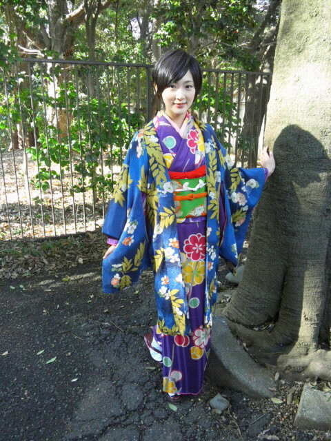

| 2012/04 08 Sun | 名古屋全国握手会ヽ( ・∀・)ノ |
どもどもヽ(・∀・)ノ
生駒里奈です!!
昨日は名古屋全国握手会でしたね〜(´∀｀)
ミニライブをやりました！みなさんどうでしたか？
楽しんで頂けましたかな？
今回はひろーい公園でやりました！
天気がすごく良くて、ダンスを踊る、歌を歌うということがよりいっそう楽しかったです

だがしかし...
風が強かった...
そして春なのにとても寒かった

みなさん大丈夫でしたか？握手の時、みなさんの手がとても冷たくて、でもそれだけ私達のために待っていてくれたんだと伝わってきました。
本当にありがとうございました!!
くれぐれも風邪ひかないように!!暖かくしてくださいね!!(^-^)
あと生駒のところに来てくださった方、となりのレーンにならびながら見てしまった方はわかると思いますが...
生駒は握手の時、腰に毛布を巻いておりました。
みなさんも、メンバーのみんなも寒いのにごめんなさい...
だって、
膝が痛いんだもん。
だって、
成長期だから〜
なので、何でこいつだけ暖かくしてんだ？
と思った皆様。
生駒は成長期なのでございます！
まぁ一向に背は伸びないのですが...
と
言うわけで!!
みなさん本当に寒いなか来てくださってありがとうございますヽ(・∀・)ノ
いろいろな話が出来たと思います〜(´∀｀)
アドバイスなど参考にさせて頂きます♪
ほんとは昨日ブログ書こうと思ったんだけど、爆睡してしまった(´Д｀)
バスだから人目を気にせずに寝れるでしょ!?
あと隣さゆりんごだったんだけど、さゆりんごね
うちのか肩に頭をちょこんとのせてたよ！
可愛かった

さゆりんごファンのみなさんごめんなさい...

今さらながら...
乃木坂浪漫見てくださってありがとうございます！
へばなっ!!
コメント(319)
2012/04/08 16:30